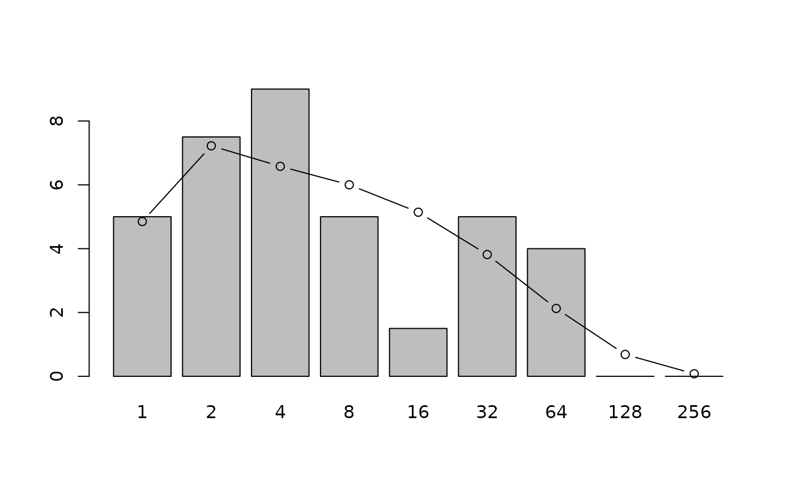

Expected frequency of species
volkov.RdGiven a community size, biodiversity parameter \(\theta\), and an immigration rate \(m\), returns the expected frequency of species with \(n\) individuals, for \(0<n\leq J\).
Arguments
- J
Size of community
- params
A two-element vector with first element interpreted as theta, the Fundamental biodiversity parameter and the second, m, interpreted as the probability of immigration. This argument will accept the output of
optimal.params()- bins
Boolean, with default
FALSEmeaning to return the expected number of species with \(1,2,\ldots,J\) individuals, andFALSEmeaning to return the binned total, using a Preston-like binning system as used inpreston()- give
Boolean, with
TRUEmeaning to return all the output ofintegrate(), and defaultFALSEmeaning to return just the value of the integral
References
I. Volkov and others 2003. “Neutral theory and relative species abundance in ecology”. Nature, volume 424, number 28.
Note
The method used is slightly inefficient: the terms to the left of the integral sign [in Volkov's equation 7] are integrated and this is, strictly, unnecessary as it is not a function of \(y\). However, taking advantage of this fact results in messy code.
Examples
if (FALSE) { # \dontrun{
volkov(J=21457,c(theta=47.226, m=0.1)) # Example in figure 1
} # }
volkov(J=20,params=c(theta=1,m=0.4))
#> [1] 0.59067733 0.36193725 0.25810432 0.19659328 0.15567107 0.12660270
#> [7] 0.10504586 0.08854998 0.07561319 0.06526131 0.05683587 0.04987788
#> [13] 0.04405974 0.03914391 0.03495774 0.03138073 0.02834761 0.02589611
#> [19] 0.02447062 0.03341949
data(butterflies)
r <- plot(preston(butterflies,n=9,orig=TRUE))
if (FALSE) jj <- optimal.params(butterflies) # \dontrun{} # needs PARI/GP
jj <- c(9.99980936124759, 0.991791987473506)
points(r,volkov(no.of.ind(butterflies), jj, bins=TRUE),type="b")
